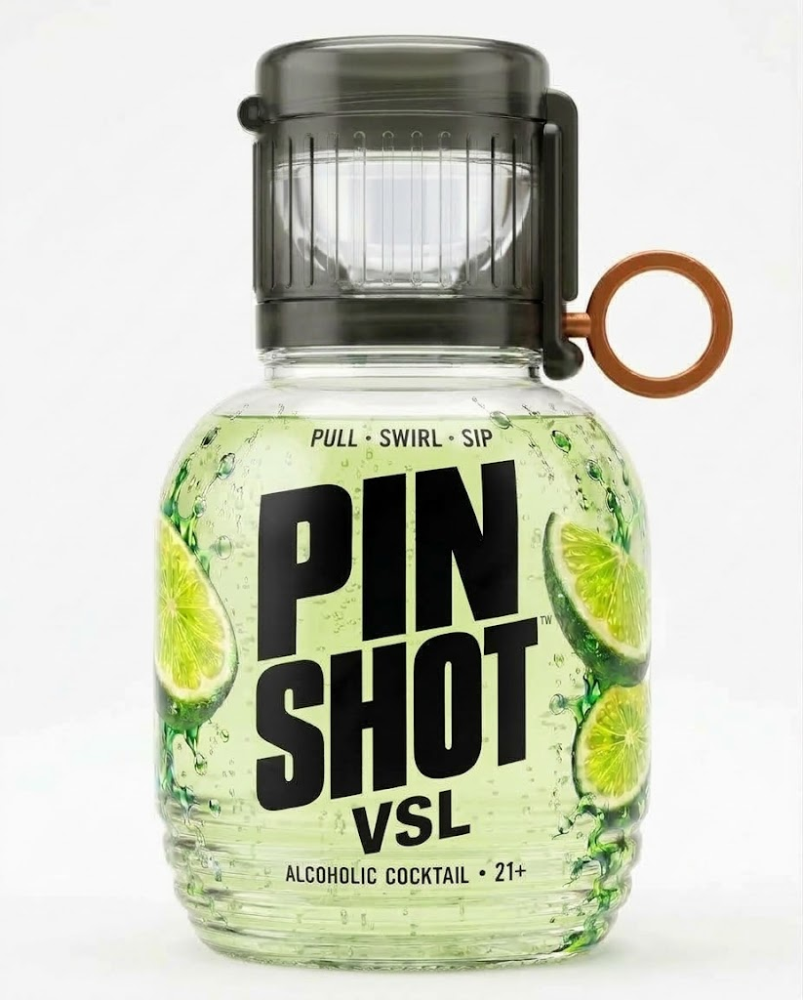
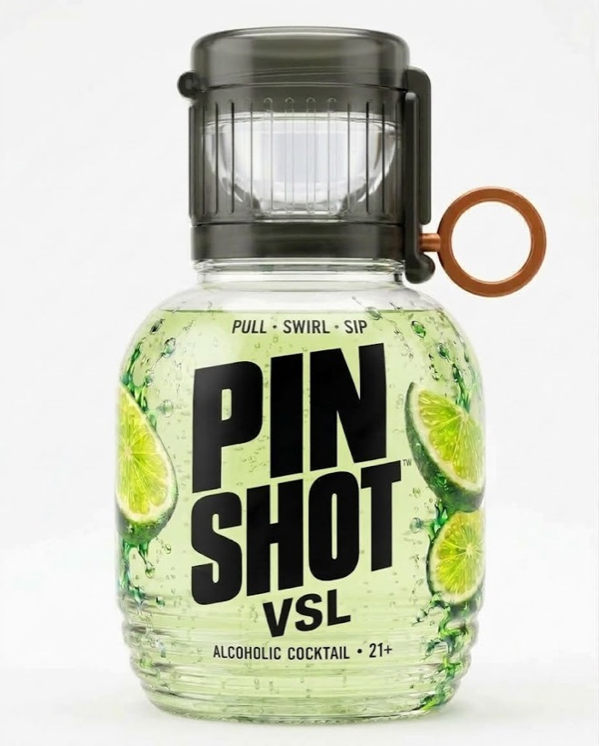

VSL / IMAGE-BASED 3D360°

Building your bottle…

3D could not start. Reload or try a browser with WebGL enabled.
DRAG TO ROTATE · SCROLL / PINCH TO ZOOM


3D could not start. Reload or try a browser with WebGL enabled.